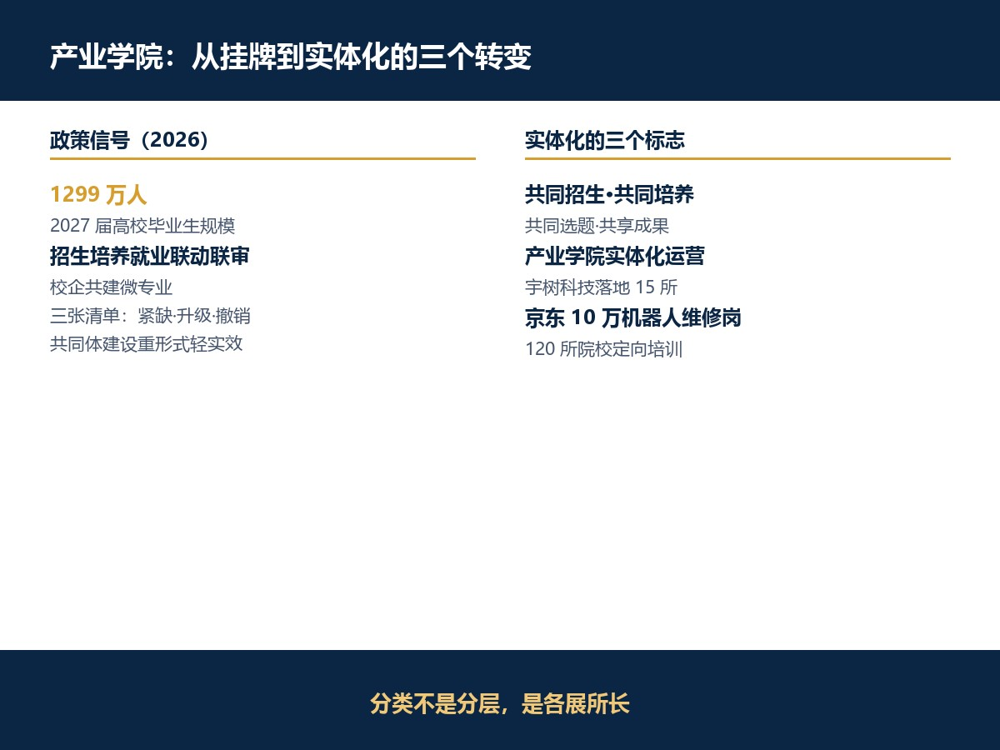

产业学院正在越过“挂牌共建”的浅水区。一边是 2027 届高校毕业生规模预计达到 1299 万人，就业压力继续向专业设置与培养质量传导；另一边是招生、培养、就业联动联审，校企共建微专业，紧缺、升级、撤销“三张清单”等政策信号不断强化。产业学院下一步的竞争，不在牌子有多少，而在能否把产业需求真正写进招生方案、课程体系、项目任务和就业结果。

一、事实层面：政策与产业两端同时加压
从政策端看，产教融合的评价口径正在改变。过去衡量产业学院，常见指标是签约企业数量、挂牌基地数量、共建专业数量；现在更受关注的是招生培养就业是否联动，专业设置能否对应区域产业紧缺方向，课程和项目是否由校企共同设计，学生毕业后的去向是否能够被持续跟踪。
公开信息显示，2027 届高校毕业生规模预计达 1299 万人。规模压力之下，专业与岗位之间的错配会被进一步放大：学校如果仍按传统节奏设置课程，企业却已经把岗位能力迭代到新一轮技术周期，毕业生就会在求职端感受到“学过的用不上、要用的没学过”。
从产业端看，企业参与人才培养的动力也在变化。宇树科技相关人才培养项目已落地 15 所院校，京东提出约 10 万个机器人维修岗位，并与约 120 所院校开展定向培训。这类案例说明，当产业进入快速扩张期，企业不再满足于参加一场招聘会或签一份合作协议，而是需要把岗位标准、训练场景和认证评价前置到培养过程。
二、深水区问题：挂牌容易，实体很难
产业学院建设的第一道坎，是目标不一致。学校关注专业建设、教学评估与招生吸引力，企业关注岗位供给、技能匹配与用人成本，地方政府关注产业集聚与人才留存。如果三方只是各自完成任务，共建就容易停留在会议室和挂牌仪式上。
第二道坎是运行机制缺失。不少产业学院没有独立的成本预算、人员编制、项目清单和质量评价，课程更新依赖个别教师与企业志愿式投入。一旦项目周期结束，合作热度随之下降，学生实际获得的能力增量有限。
第三道坎是专业调整滞后。产业变化往往以季度为单位，而高校专业调整、培养方案修订和师资结构变化通常需要更长周期。若没有微专业、课程包、订单班等灵活载体，产业学院很难承接机器人、智能制造、跨境电商等快速迭代的岗位需求。
三、实体化的三个标志
其一，共同招生、共同培养。产业需求不应只在毕业季出现，而应进入招生宣传、选拔标准和培养方案。企业参与定义学生应解决什么问题、掌握什么工具、完成什么项目，学校负责把这些要求转化为可实施的教学体系。
其二，共同选题、共享成果。实体化产业学院要围绕真实项目组织教学，把企业任务转化为课程案例、实训项目、毕业设计和竞赛命题。学生完成的不只是作业，而是可被企业识别的能力证明；教师也不只发表论文，而是形成课程包、案例库、标准与技术服务成果。
其三，实体化运营。真正有生命力的产业学院，需要相对稳定的运营主体，具备人员、预算、场地、设备和项目来源。它既不是学校内部的一个临时机构，也不是企业单向投放的宣传窗口，而是连接教育链、人才链、产业链与创新链的持续接口。
四、客户场景：高校、企业与园区各有必答题
对高校而言，关键是把“三张清单”做实：紧缺方向用于新增招生与培养资源，升级方向用于改造既有课程与实践环节，撤销方向用于果断压缩供需错位的专业。微专业可以作为快速响应产业的试验田，先以小规模、高强度、项目化方式验证需求，再决定是否沉淀为正式专业方向。
对企业而言，关键是把岗位标准前置。哪些岗位可以由学校培养，哪些能力必须经过企业实景训练，哪些认证应当由行业共同认可，都需要写清楚。企业越早参与课程与评价，后期招聘成本越低，人才适配度越高。
对园区与地方政府而言，关键是搭建共性平台。单个学校很难覆盖完整产业链，单个企业也难以承担大范围培养任务。以产业学院为节点，把院校、龙头企业在地子公司、服务商和公共平台组织起来，才能形成“招生有方向、培养有场景、就业有出口”的区域闭环。
五、趋势判断：从数量共建转向质量运营
其一，评价标准会从“建了多少”转向“产出什么”。未来更需要看学生项目成果、就业质量、企业复购合作、课程更新频率和成果转化情况。只挂牌不运营的产业学院，将逐步失去政策与生源双重支持。
其二，微专业与订单班将成为高频载体。面对机器人、人工智能、智能制造等快速变化领域，完整专业调整周期太长，微专业和订单班更灵活，能够把新工具、新工艺、新岗位尽快送进课堂。
其三，共同体建设会从松散联盟走向实体协同。公开讨论中已经出现“重形式轻实效”的反思，下一步更可能出现少量高质量、可考核、有项目流水的实体化样板，而不是数量众多但缺乏产出的联合体。
其四，产业学院会成为招生与就业的前端入口。对学生和家长来说，一个产业学院是否有真实企业项目、是否有稳定就业通道、是否能提供可验证的能力证书，会直接影响报考判断。产业学院的公信力，将越来越像一张面向市场的“能力名片”。
结语
产业学院的深水区，不是合作难，而是持续难；不是挂牌难，而是运营难。谁能把招生、培养、就业连成闭环，谁能让企业标准进入课程、真实项目进入课堂、产业成果进入评价，谁就能在新一轮产教融合中形成真正的竞争力。研究院在服务产业学院建设时，也更应从需求诊断、课程共建、项目导入与成效评估四个环节入手，帮助合作从“有形”走向“有效”。
本文所引数据来自公开报道与公开政策信息，具体分析为行业趋势研判，不构成报考、经营或投资建议。